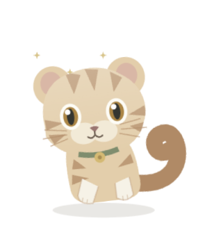

每只都有自己的样子
毛色、花纹、眼睛、耳朵、尾巴与体型由基因组合决定。基因图鉴列出初代获取概率，也保留普通但可爱的样子。
领养一枚宠物蛋，让日常的 Codex 使用慢慢变成成长能量。每只伙伴拥有不同的基因外貌和出生技能，在桌面上陪你发呆、眨眼、轻轻摇尾巴。
当前为未签名内测版 · macOS · Apple silicon
慢慢来，也很好。毛色、花纹、眼睛、耳朵、尾巴与体型由基因组合决定。基因图鉴列出初代获取概率，也保留普通但可爱的样子。
从本机 Codex 使用记录估算成长奖励，设置每日上限。查看钱包和奖励，不需要额外调用模型养宠物。
眨眼、耳朵轻抖、尾巴轻摆；伙伴还有出生技能和可以表演的小动作。喜欢就让它留在桌面角落。
同一局域网内，可邀请同事的小伙伴串门与繁育。当前为本地养成版，没有账号、在线交易或现金充值。
支持 Apple 芯片 Mac。下载后把 Pawprint 放入「应用程序」。新版本会在应用内提示，确认后自动下载并安装。